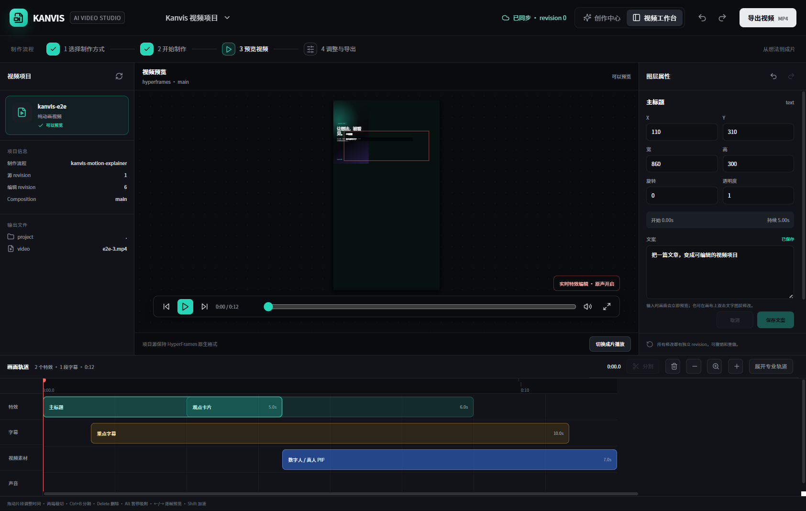

Kanvis Article to Videokanvis-article-to-video · 长文理解、口播改写、分镜、字幕与发布质检
把文章、课程稿和专业知识整理成口播脚本、分镜、字幕与素材任务，保留原文依据，并在发布前完成内容检查。
面向创作者与AI实践者的免费开放生态。这里持续发布Kanvis官方Skill与创作工具，也收录来源明确的图片、PPT和视频开放Skill。

当前产品原型 · 免费剪辑工作台区分已经开源的能力与正在开发的产品，具体状态以卡片标签为准
把文章、课程稿和专业知识整理成口播脚本、分镜、字幕与素材任务，保留原文依据，并在发布前完成内容检查。
Skill在Codex中执行后，生成可编辑视频项目，进入Kanvis Studio的无限画布预览、修改并在本机导出MP4。网页这里只做介绍，不运行本地工程。
官方项目与外部Skill都提供公开来源，按图片、PPT和视频任务快速查找
收录图片生成、视觉设计、小红书图卡和封面制作等开放Skill。
收录内容转演示文稿、网页幻灯片和可编辑PPTX等开放Skill。
收录视频转写、程序化剪辑、数字人视频与发布质检等开放Skill。
欢迎提交来源公开、许可证清楚的图片、PPT、视频和创作工具Skill；Kanvis只做来源标注、分类与使用指引，不改变原作者归属。
免费收录Kanvis官方项目与来源公开的外部Skill，覆盖图片、PPT、视频和内容工作流
Kanvis自主维护，未发布项目统一标注待开源
把文章、课程稿和专业知识转成口播脚本、分镜、字幕、素材任务与可编辑视频项目。
把真实经历、判断、案例和证据整理成可持续拆分、改写与复用的内容母稿。
检查选题源、内容资产、生产流程和复盘闭环，输出问题清单与改进优先级。
用公开问题框架检查定位、产品、内容、销售、交付与数据，形成诊断清单。
检查分辨率、音轨、字幕安全区、素材授权、生成费用和人工审核状态。
提供模型与数字人供应商的接口、Mock、BYOK、费用上限和失败恢复起点。
统一编排图片、语音、数字人和视频生成任务，支持BYOK、费用确认与结果回传。
生成图片、图文卡片与视觉设计
通过多个模型供应商完成文生图、参考图、尺寸控制和批量生成。
把内容拆成适合小红书发布的系列图文卡片，并支持风格、布局与配色选择。
用于生成或编辑位图素材，覆盖照片、插画、纹理、透明背景素材和视觉变体。
从内容生成幻灯片、网页PPT与演示素材
从内容生成专业演示文稿大纲与逐页图片，并可合并为PPTX和PDF。
生成单文件横向翻页网页PPT，提供电子杂志和瑞士国际主义等视觉风格。
视频转写、程序化剪辑与数字人视频生产
让编码Agent整理原始素材、制定剪辑策略、渲染成片并执行自动质量检查。
围绕数字人创建和视频生产提供Agent Skill工作流，需要使用者自行配置供应商账号。
下载YouTube视频字幕、章节和封面，并整理为可继续分析和创作的文本素材。
继续搜索、核验来源并提交新的开放项目
Kanvis生态库暂未收录时，可以继续按任务关键词查找其他公开Skill。
项目需要有公开来源、清楚用途和可核验许可证；收录时保留原作者、原仓库与许可证信息。
免费开放的Codex原生视频工作台：Skill生成项目后，在无限画布中预览、编辑并在本机渲染MP4
填写后会在本地生成一份结构化说明，不会自动上传或提交。